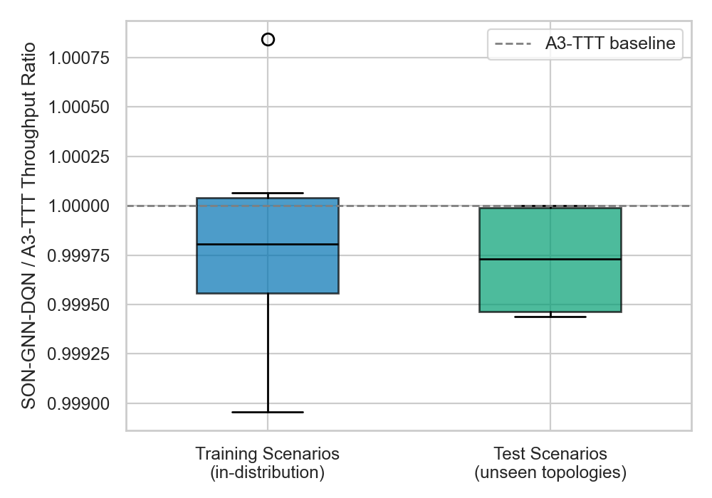
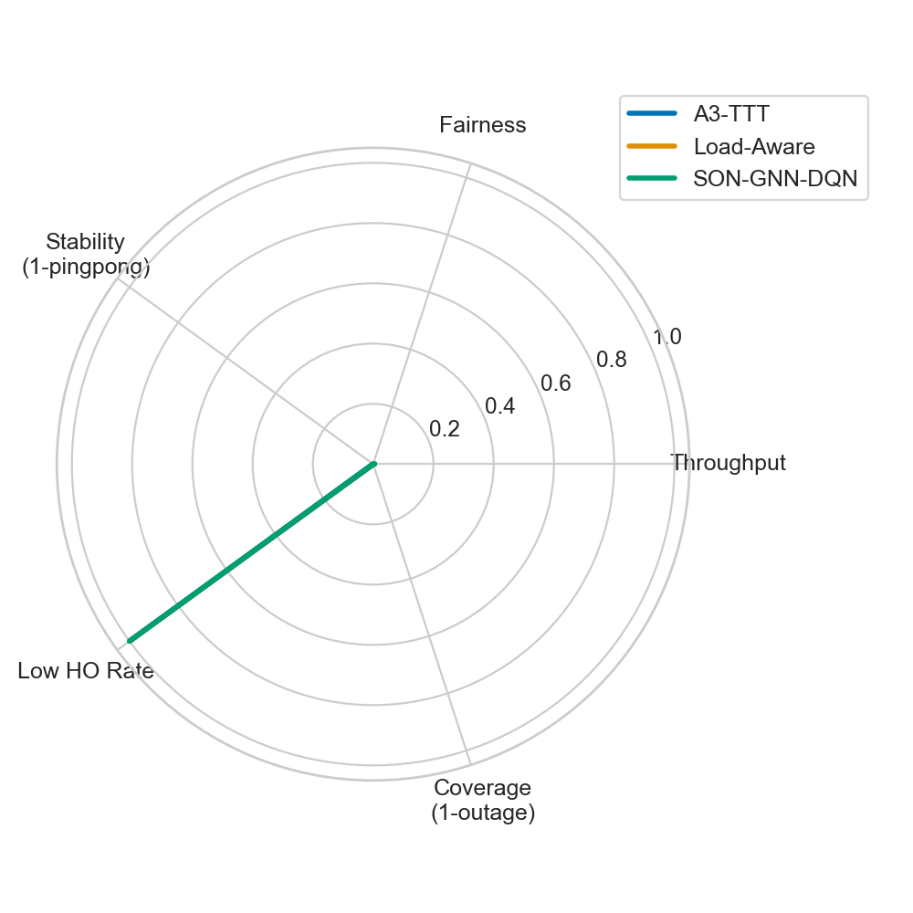
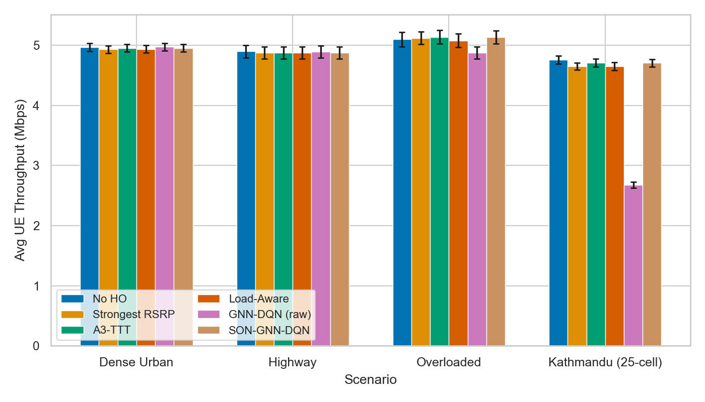

A graph neural network learns which target cell each UE prefers, then a safety-bounded SON layer converts those preferences into standard A3, CIO, and TTT handover settings.
Real users move through dense city grids, highways, rural gaps, and event congestion. A good policy must balance signal, load, outage, and stability.
The GNN does not memorize one map. It learns local relationships between neighboring cells, then transfers that logic to unseen geography.
Shape for one UE: N cells by 11 features. The action is the target cell, with invalid weak cells masked out.
This is why a model trained on one set of cell counts can infer on Kathmandu-style 25-cell and larger topologies.
The GNN learns patterns like: target is stronger, less loaded, improving, and close enough to be safe.
Training uses scenario mixing, epsilon exploration, target networks, optional prioritized replay, n-step returns, and held-out SON validation.
B graphs are copied into one disconnected batch: B times N cell nodes. The code passes batch_size and nodes_per_graph so a 40-cell topology is never mistaken for two 20-cell graphs.
In plain language: the model compares what it predicted with what actually happened, then adjusts its handover preference rule.
Raw GNN-DQN is a research baseline. The defense-ready method is the SON layer that adjusts bounded CIO and TTT while standard A3 still executes the handover.
Count how many UEs served by cell A prefer target B.
Undo CIO changes if throughput drops or ping-pong increases.
The honest defense claim: SON-GNN-DQN is A3-competitive across evaluated scenarios while maintaining near-zero ping-pong and preserving a safer deployment path.



Drive-test data without PRB remains valid: PRB utilization is zero and PRB availability is zero. RSRQ-derived load is always described as a proxy, never as real PRB utilization.
Cells are nodes, nearby cells are edges, and message passing learns relationships.
Rewards balance throughput, fairness, outage, load, and ping-pong.
Preferences become bounded CIO/TTT changes, not unsafe direct commands.
Our system is SON-compatible today, O-RAN extensible tomorrow, and designed to generalize across real and synthetic cellular geography.